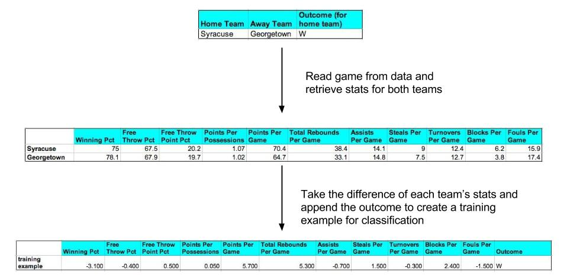
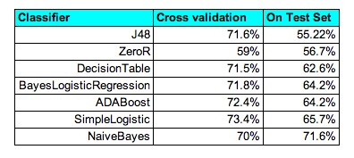
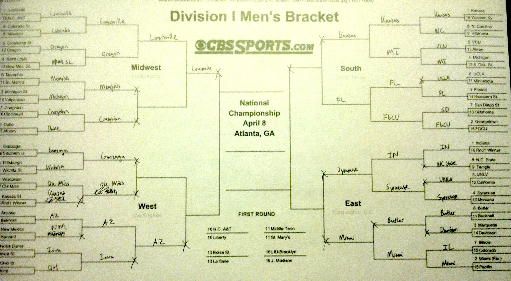

Using Machine Learning Techniques
EECS 349 - Winter 2014
March Madness is a NCAA Division I Basketball tournament that was founded in 1939 and has been played annually since. The tournament traditionally runs from the middle of March to the end of April and features the top 68 teams from around the country.
Filling out a March Madness bracket has been somewhat of an American tradition, with a history of high offers for anyone who can fill out a perfect bracket. In 2012, Fox Sports offered $1 million to anyone who could do it, and for this upcoming season, Warren Buffett offered $1 billion. Sadly, there has been no documented case of a perfect bracket in the history of the tournament.
Our goal for this project is to accurately predict a March Madness bracket for the upcoming 2014 tournament. We will use a number of machine learning techniques and attempt to identify the characteristics that determine a team’s success in the tournament.
To construct our bracket, we will ask the following questions in our experiments:
Working with sports data is both a blessing and a curse - there are a countless number of websites available that provide data but it is not always provided in an structured format that fits the user’s specific needs. We surveyed a number of available sports data sites and ultimately opted for Statsheet because the data was provided in a relatively structured format that made it straightforward to scrape.
Our dataset consists of information from Statsheet’s NCAAB site for the 2012-2013 season. The set contains all 351 NCAAB D1 teams, their conference schedule games (a total of 3207 games), and their season long statistics (54 for each team). The team statistics are a combination of binary, continuous and discrete variables that we are using as a feature set to represent each individual team. A sample of the types of features that we collected include but are not limited to:
In order to conduct our experiments, we needed to create instances representing the games that occurred from the data that we collected. season. To create an instance, we looked at our game data, which was formatted in the following format:
Using this information, we queried our data to find the season statistics for each team, giving us a set of numeric values describing each team. Next in order to model the actual game, we took the difference of the stats between the respective teams (home team stats - away team stats) and appended the outcome of the game to it. This gave us a numerical representation of a game that we could use as a training example to feed into a classifier model.

Outline of how we constructed our training examples (not all of our features are included in this diagram).
Our rationale behind modeling a game in this format was because it was a reasonable (and simple) way to represent a matchup between two teams - it is the difference in team skill (which we are representing as their season statistics) that ultimately decides which team wins in a basketball game. Intuitively, modeling a game in this way makes sense - a team that has a consistently higher average points per game is more likely to defeat a team that has a much lower average points per game.
To test the accuracy of our models, we used the games from the 2012-2013 March Madness tournament and generated test instances following the same method as with the training examples.
Once we had our training examples and test data, we conducted our experiment as follows:
After trying different models, the Naive Bayes classifier had the best percentage on 2013 March Madness tournament, predicting 71.6% of the games correctly. Naive Bayes is an optimal choice for our classifier not only because it had the best percentage, but because all of our features are numeric, the nature of how Naive Bayes is calculated synchronizes with our data. Naive Bayes relies on the probabilities calculated through the mean and standard deviation of a feature.

The problem with decision trees is that will numeric values, it would overfit our data to too specific numeric values. Therefore, we saw a very high success rate for our J48 tree (72%), but a rate that was worse than our ZeroR rate on the actual 2013 March Madnesss tournament (55%).
Once we chose the Naive Bayes classifier, we attempted to use less features on the classifier, in hopes a simpler model would be better. Unfortunately, after trying to get rid of many different features, we either were left with the same accuracy or worse. This is logical though, because all the of statistics we recorded are major statistics. Even getting rid of number of Disqualifications a team gets, what we thought was a rare and minor feature in our data, dropped our success rate to 70.15%.

Although 71.6% isn’t a bad percentage for classifiers, it probably won’t be good enough to predict 100% accuracy for a March Madness bracket. After filling out the 2013 bracket, we can see some flaws in our predictor. For instance, we predicted Creighton to beat Duke. This is due to the fact that Creighton had very high statistics because it’s conference is easier than Duke’s. However, in the same bracket we see that we correctly picked Wichita (#9) to upset Pittsburgh (#8) and Iowa (#10) to upset Notre Dame (#7). Most dramatically, we correctly picked FGCU (#15) to upset Georgetown (#2). Therefore, we can see some fruit in our classifier.
For future work, we should include some type of measure for how difficult a conference is to weight statistics accordingly. Additionally, if we could include player statistics also, this would probably create better accuracy, as player matchups in basketball are very important.
future work